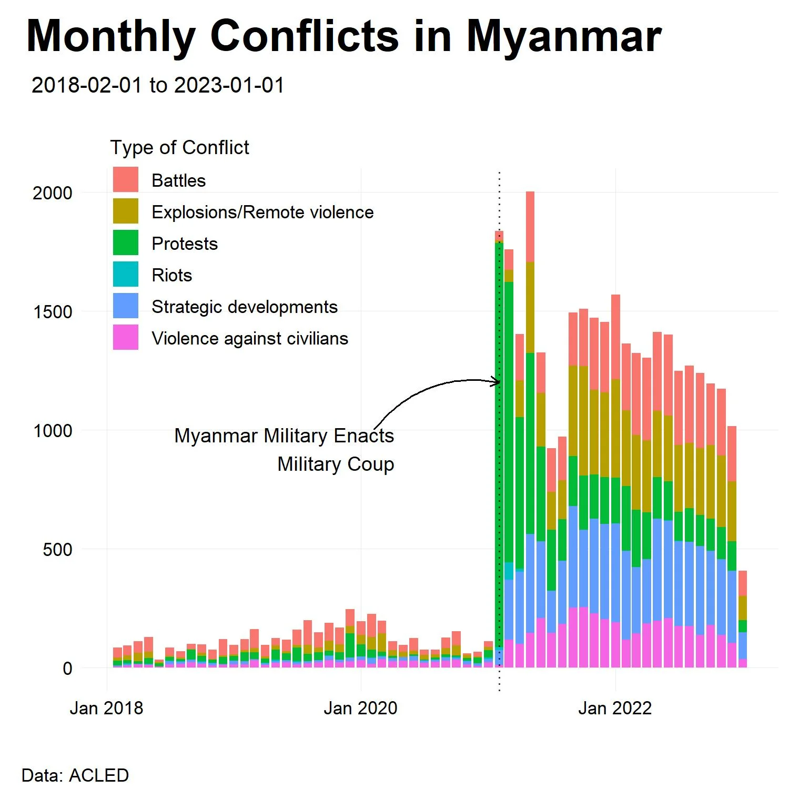
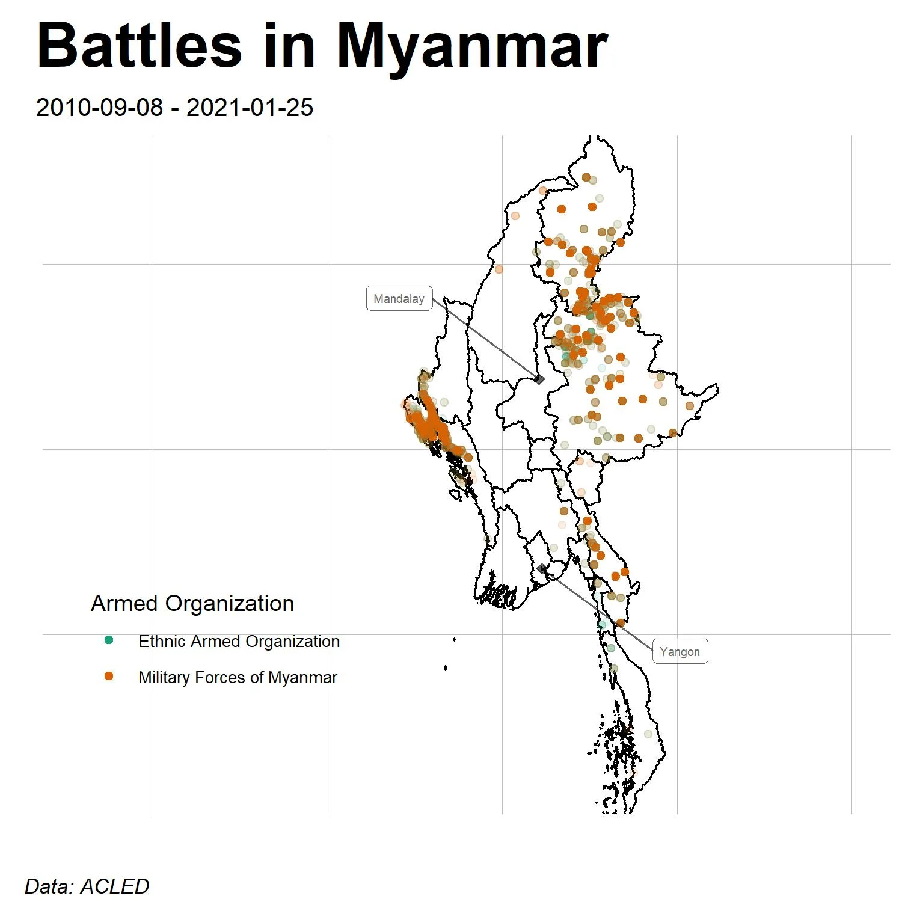
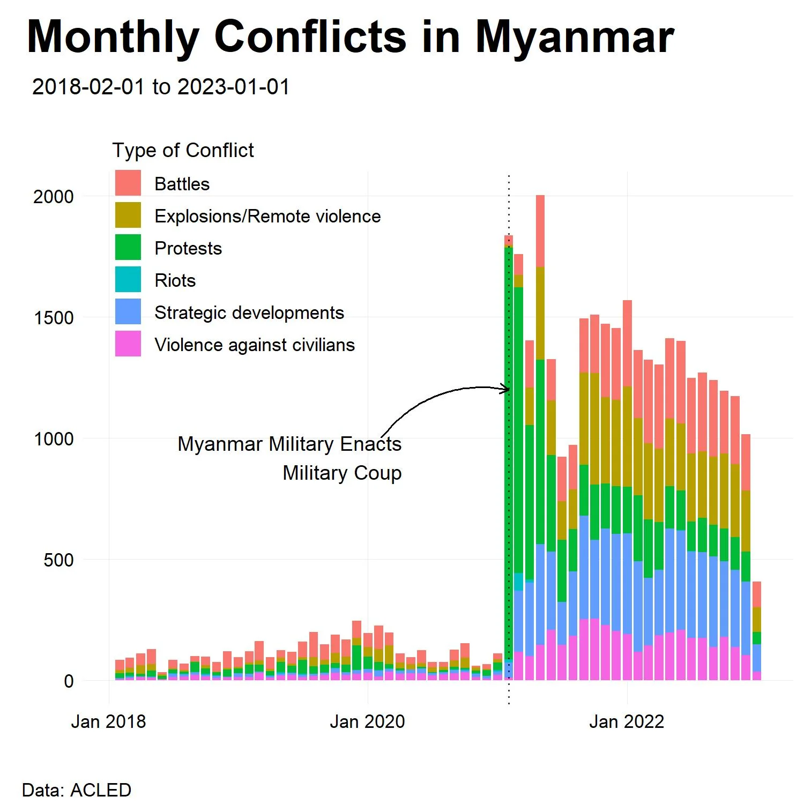
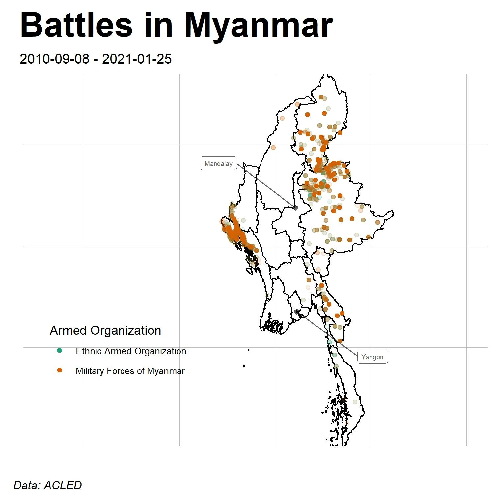

Reports
A Data-Driven Look at the War in Myanmar
 



April 6, 2023
3.5 times more battles, more than 6.5 times more explosions/remote violence, 32 times more protests, almost 5 times more riots, nearly 20 times more strategic developments, and 5 times more acts of violence against civilians.